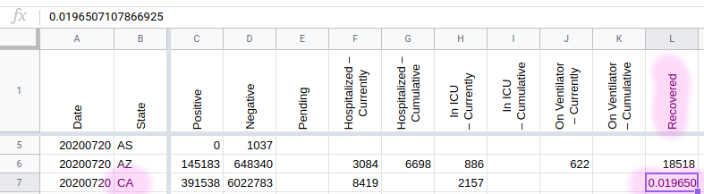

#1082: Removing values from the API field Negative from AK, CA, DC, GA, KY, NY, OH, OR, TX, VA and WA
Issue number 1082
jaclyde opened this issue on January 27, 2021, 3:13 PM PST
Labels Data quality
States: Alaska, California, Washington DC, Georgia, Kentucky, New York, Ohio, Oregon, Texas, Virginia, Washington
Issue: We are removing negatives that were created from mixed units (specimens minus cases or test encounters minus cases) for states that are using explicit totals in our main total test results field (called totalTestResults in the API). See the Data FAQ for additional explanation.
Comments
California: Never reported negatives directly, but did report in Total tests (people) until April 21, 2020. Removing time series from present to April 22, 2020.
Values Removed: Changes.txt
Washington DC: Never reported negatives directly, and has always reported encounters, removing total time series
Values Removed: Changes.txt
Georgia: Never reported negatives directly and always reported in specimens, removing total time series
Values Removed: Changes.txt
Kentucky: Never reported negatives directly and always reported in specimens, removing total time series
Values Removed: Changes.txt
New York: Never reported negatives directly and always reported in encounters, removing total time series
Values Removed: Changes.txt
Ohio: Never reported negatives directly and always reported in specimens, removing total time series
Values Removed: Changes.txt
Oregon: Never reported negatives directly, but did report in Total tests (people) until December 1, 2020. Removing time series from present to December 2, 2020.
Values Removed: Changes.txt
Texas: Never reported negatives directly and always reported in specimens, removing total time series
Values Removed: Changes.txt
Virginia: Never reported negatives directly and always reported in encounters, removing total time series
Values Removed: Changes.txt
Washington: Negatives were backfilled with values calculated from total tests (encounters)-confirmed cases in August 2020. Removing total time series.
Values Removed: Changes.txt
#1082: Removing values from the API field Negative from AK, CA, DC, GA, KY, NY, OH, OR, TX, VA and WA
Issue number 1082
jaclyde opened this issue on January 27, 2021, 3:13 PM PST
Labels Data quality
States: Alaska, California, Washington DC, Georgia, Kentucky, New York, Ohio, Oregon, Texas, Virginia, Washington
Issue: We are removing negatives that were created from mixed units (specimens minus cases or test encounters minus cases) for states that are using explicit totals in our main total test results field (called totalTestResults in the API). See the Data FAQ for additional explanation.
Comments
Alaska: Never reported negatives directly and always reported in specimens, removing total time series
Values Removed: Changes.txt
California: Never reported negatives directly, but did report in Total tests (people) until April 21, 2020. Removing time series from present to April 22, 2020.
Values Removed: Changes.txt
Washington DC: Never reported negatives directly, and has always reported encounters, removing total time series
Values Removed: Changes.txt
Georgia: Never reported negatives directly and always reported in specimens, removing total time series
Values Removed: Changes.txt
Kentucky: Never reported negatives directly and always reported in specimens, removing total time series
Values Removed: Changes.txt
New York: Never reported negatives directly and always reported in encounters, removing total time series
Values Removed: Changes.txt
Ohio: Never reported negatives directly and always reported in specimens, removing total time series
Values Removed: Changes.txt
Oregon: Never reported negatives directly, but did report in Total tests (people) until December 1, 2020. Removing time series from present to December 2, 2020.
Values Removed: Changes.txt
Texas: Never reported negatives directly and always reported in specimens, removing total time series
Values Removed: Changes.txt
Virginia: Never reported negatives directly and always reported in encounters, removing total time series
Values Removed: Changes.txt
Washington: Negatives were backfilled with values calculated from total tests (encounters)-confirmed cases in August 2020. Removing total time series.
Values Removed: Changes.txt
#940: [CA] Backfilling 11/8 data because they did not update until after 5pm PT
Issue number 940
jaclyde opened this issue on November 8, 2020, 10:12 PM PST
Labels Data quality Missing Data Publish Time
State: California
Problem: CA did not update it's dashboards on 11/8 until sometime after 5pm PT.
Solution: Update today's values from the dashboards now that they've updated. Screenshots: https://covid-tracking-project-data.s3.us-east-1.amazonaws.com/state_screenshots/CA/CA-secondary-20201109-051143.png https://covid-tracking-project-data.s3.us-east-1.amazonaws.com/state_screenshots/CA/CA-tertiary-20201109-051148.png
Comments
BEFORE:
AFTER:

#681: [CA] 7/26 ICU freeze
Issue number 681
brianskli opened this issue on July 27, 2020, 1:37 PM PDT
Labels Historical Data
State or US: California
Describe the problem CA is currently under a hospitalization/ICU collection freeze due to inconsistent reporting disruptions. ICU numbers were updated on 7/26.
Link to data source N/A
Comments
7/26 ICU value was changed to 2284, the value used for the freeze.
Before:
After:

#675: [CA] 7/23 hospitalization freeze needs to be reflected in ICU data as well
Issue number 675
brianskli opened this issue on July 25, 2020, 2:11 PM PDT
Labels Historical Data
State or US: California
Describe the problem: On 7/23, it was decided that hospitalization coverage would be frozen. However, ICU coverage was not stopped until 7/25. ICU values should be carried forward until 7/25.
Link to data source: https://update.covid19.ca.gov/
Comments
Only one data point (7/24 ICU) was affected. It was modified to reflect the data freeze. Before: After:
#652: [CA]Data entry error caused CA recoveries number to show up on 7/20. It should be deleted
Issue number 652
muamichali opened this issue on July 20, 2020, 6:11 PM PDT
Labels Data quality
State or US: CA
Describe the problem Data entry error caused CA recoveries number to show up on 7/20. It should be deleted
Comments
Before:  Fix:
Site updated
#615: [CA] PCL Cases Historicals
Issue number 615
pscsharon opened this issue on July 13, 2020, 7:45 AM PDT
Labels Backfill PCL/SVP Historicals not stale
It appears CA has reported Confirmed-Cases using the phrase confirmed positive cases since their first report on Mar 15th.
Please backfill Positive Cases (PCR) using archive of screenshots. http://covid-tracking-project-data.s3-website.us-east-1.amazonaws.com/state_screenshots/CA/
Comments
I took a quick look at this and the screenshots are kind of a mess before April. Some of them have no data, others are of the Los Angeles Times instead of a state source, etc. Maybe a better source is the California health department press releases, which are nearly daily? https://www.cdph.ca.gov/Programs/OPA/Pages/New-Release-2020.aspx However even there, we will have to decide how to deal with a bunch of old school issues like whether to include "Federal repatriation flights".
We can take all the dashboard data from CA's data portal. In the dataset we have, they do not separate it into citizens/non-citizens
PDF for comparison and DC: Link to work sheet: https://docs.google.com/spreadsheets/d/13tI18huMNKdVh7Rgqp2DWFWGPEHxz9V56jwYlP1d4IU/edit#gid=1153718346 PDF for posterity: CA - Analysis #615.pdf
This issue has been automatically marked as stale because it has not had recent activity. It will be closed if no further activity occurs. Thank you for your contributions!
This issue has been closed because it was stale for 15 days, and there was no further activity on it for 10 days. You can feel free to re-open it if the issue is important, and label it as "not stale."
#567: [CA Historicals] 7/1 California backfilled test information from the last few days
Issue number 567
muamichali opened this issue on July 2, 2020, 5:47 AM PDT
Labels Data quality
State or US: California
Describe the problem On 7/1 CA reported ~9k tests;, but actually some were from yesterday, some from the day before that etc.
Link to data source

Comments
We have 5 values that differ between what's currently reported by the state of California and CTPs data.
| Date | CA | CTP |
|---|---|---|
| 20200701 | 232657 | |
| 20200630 | 232657 | 222917 |
| 20200629 | 226759 | 216550 |
| 20200628 | 218539 | 211243 |
| 20200627 | 211851 | 206433 |
| 20200626 | 206731 | 200461 |
| 20200625 | 200545 | 195571 |
| 20200624 | 195571 | 190222 |
We're also shifted by 1 day from CA's published data
The numbers keep changing, we can patch now and repeat later, as needed. I don't know whether it's a process change from what they've been doing
This stabilized now, so we'll backfill with the numbers displayed on the dashboard now.
The fields that changed are: Positive Cases (PCR),Positive, Negative
2020-07-05 | 260155 | 265985 | -- | -- | -- | -- 2020-07-04 | 254745 | 257388 | 2020-07-03 | 248235 | 248235 | 2020-07-02 | 240195 | 242547 | 2020-07-01 | 232657 | 236139 | 2020-06-30 | 222917 | 228732 | 2020-06-29 | 216550 | 219252 |
#433: CA 4/1 to current 5/17 - Data is off by one day from official CA press releases
Issue number 433
scarson opened this issue on May 17, 2020, 11:11 PM PDT
Starting on March 30th, the California reporting structure changed, displaying a “California COVID-19 By the Numbers” infographic. This image reports the data for the day according to the end-of-day values from the previous day. The CTP starts recording this data as a primary source on April 2nd, except it enters the data on the day the graphic is published, not the day referenced in the graphic. So the April 2nd graphic matches the CTP data for April 2nd, however the graphic lists them as end-of-day numbers for April 1st.
Need to shift all CA numbers so that they reflect CA's "Numbers as of $date", not the press release date ($date+1). Day forward recording needs to be enter numbers for $date in the actual matching day as well.
This change is important for consistency and modeling.
For March fixes (which include similar off-by-one errors, among others), please see: #432 #431
@thaynedye @dcmoyer
Comments
This issue has been automatically marked as stale because it has not had recent activity. It will be closed if no further activity occurs. Thank you for your contributions!
Hi @scarson, Thanks for bringing this to our attention! CA updated its data after our publish time cutoff. If a state updates after that time, we catch that update on the following day. See my response to #431 and #432 for further discussion.
#432: CA 3/18 - 3/31 - Data doesn't match CA official press releases
Issue number 432
scarson opened this issue on May 17, 2020, 11:00 PM PDT
Quite a few issues here. Some typos in data entry and a running off-by-a-day issue.
Because the screenshots are inconsistent, I reference the current official CA press release archive instead.
California started reporting total and pending test numbers on March 18th, so I'm including those here too. The CTP March CA numbers have "N/A" values for Pending through 3/23. It's unclear where some of the earlier Total test numbers come from.
March 18 state data "As of March 18, 2020, 6 p.m. PDT" 3/18 should have 675 Positives instead of 611. 3/18 should have 16 Deaths instead of 13. 3/18 should have 6,300 Total [Tests] instead of 8,592. 3/18 should have 10,000 Pending [Tests] instead of N/A. "At least 6,300 results have been received and another 10,000+ are pending."
March 19 state data "As of March 19, 2020, 6 p.m. PDT" 3/19 should have 1,006 Positives instead of 924. 3/19 should have 19 Deaths instead of `18. 3/19 should have 11,487 Total [Tests] instead of 9,711. This is currently an off-by-one for the 20th. 3/19 should have 11,700 Pending [Tests] instead of N/A.
March 20 state data "As of March 20, 2020, 6 p.m. PDT" 3/20 should have 1,224 Positives instead of 1,063. 3/20 should have 23 Deaths instead of 20. 3/20 should have 12,528 Total [Tests] instead of 9,711. This is currently an off-by-one for the 21st. 3/20 should have 12,700 Pending [Tests] instead of N/A.
**Note: CA daily reporting cutoff moves up four hours from 6 p.m. to 2 p.m. PDT between 3/20 and 3/21.
March 21 state data "As of March 21, 2020, 2 p.m. PDT" 3/21 should have 1,468 Positives instead of 1,279. 3/21 should have 27 Deaths instead of 24. 3/21 should have 13,467 Total [Tests] instead of 12,528. This is currently an off-by-one for the 22nd. 3/21 should have 12,700 Pending [Tests] instead of N/A.
March 22 state data "As of March 22, 2020, 2 p.m. PDT" 3/22 should have 1,733 Positives instead of 1,536. 3/22 correctly lists deaths at 27. 3/22 should have 14,317 Total [Tests] instead of 12,840. This is currently an off-by-one for the 23rd. 3/22 should have 12,100 Pending [Tests] instead of N/A.
March 23 state data "As of March 23, 2020, 2 p.m. PDT" This is currently an off-by-one for the 24th. 3/23 should have 2,102 Positives instead of 1,733. 3/23 should have 40 Deaths instead of 27. 3/23 should have 15,554 Total [Tests] instead of 14,300. 3/23 correctly lists 12,100 Pending [Tests].
March 24 state data "As of March 24, 2020, 2 p.m. PDT" This is currently an off-by-one for the 25th. 3/24 should have 2,535 Positives instead of 2,102. 3/24 should have 53 Deaths instead of 40. 3/24 should have 18,276 Total [Tests] instead of 15,554. 3/24 should have 48,600 Pending [Tests] instead of 12,100.
March 25 state data "As of March 25 2020, 2 p.m. PDT" This is currently an off-by-one for the 26th. 3/25 should have 3,006 Positives instead of 2,355. This is both off-by-one and a typo of "2,535". 3/25 should have 65 Deaths instead of 53. 3/25 should have 20,386 Total [Tests] instead of 18,276. 3/25 should have 57,400 Pending [Tests] instead of 48,600.
March 26 state data "As of March 26 2020, 2 p.m. PDT" This is currently an off-by-one for the 27th. 3/26 should have 3,801 Positives instead of 3,006. 3/26 should have 78 Deaths instead of 65. 3/26 should have 23,480 Total [Tests] instead of 20,386. Current number is wrong, not just off-by-one. 3/26 should have 65,000 Pending [Tests] instead of 57,400.
March 27 state data "As of March 27 2020, 2 p.m. PDT" 3/27 should have 4,643 Positives instead of 3,879. Current number is wrong, not just off-by-one. 3/27 should have 101 Deaths instead of 78. 3/27 should have 25,192 Total [Tests] instead of 21,259. 3/27 should have 64,400 Pending [Tests] instead of 57,400.
March 28 state data is missing for positives and deaths. The next CA state data report is for the 29th. Unclear where CTP data comes from. Treat as non-reporting day for positives and deaths. CA notes "***This week’s cumulative testing numbers are lower than last week due to an inadvertent over-reporting error discovered by one of the private labs." March 28 state data "As of March 28 2020, 2 p.m. PDT" 3/28 should have 27,251 Total [Tests] instead of 21,259. 3/28 should have 56,550 Pending [Tests] instead of 57,400.
March 29 state data "As of March 29 2020, 2 p.m. PDT". This report includes March 28th's total and pending test numbers. There are no reported total and pending numbers for March 29. Treat as non-reporting day. 3/29 should have 5,763 Positives instead of 5,708. Current number is wrong, not just off-by-one. 3/29 should have 135 Deaths instead of 123.
March 30 state data. CA stopped reporting a time cutoff starting with the March 31 press release w/ March 30 data. 3/30 should have 6,932 Positives instead of 6,447. 3/30 should have 150 Deaths instead of 133. 3/30 should have 28,704 Total [Tests] instead of 26,996. 3/30 should have 57,400 Pending [Tests] instead of 64,400.
March 31 state data. 3/30 should have 8,155 Positives instead of 7,482. 3/30 should have 171 Deaths instead of 153. 3/30 should have 31,038 Total [Tests] instead of 29,254. 3/30 should have 59,100 Pending [Tests] instead of 57,400.
Off-by-a-day errors aside, it makes sense to use official state reported confirmed case and death numbers for a date when those are higher than current CTP reported values. It is unlikely the state is making up higher positive case and death counts.
@thaynedye @dcmoyer
Comments
This issue has been automatically marked as stale because it has not had recent activity. It will be closed if no further activity occurs. Thank you for your contributions!
Hi @scarson, Thanks again for bringing these discrepancies to our attention. For an explanation of why these numbers may differ from ours, see #431. You are 100% right that some of these discrepancies for 3/18-31 are big (we generally do not worry about off-by-one lags, so the pendings + days where the counts are different are the ones we'd like to correct). We have a team working to determine how and whether to update data from historical sources in event of discrepancies like this. I will flag this as a potential source of data to them.
#431: CA 3/11 - 3/17 - Data doesn't match CA official press releases/screenshots
Issue number 431
scarson opened this issue on May 17, 2020, 8:27 PM PDT
Quite a few issues here.
Because the screenshots are inconsistent, I reference the current official CA press release archive instead.
March 12 state data "As of March 13, 2020, 8 a.m. PDT" (Taking early morning report as for previous day). 3/12 should have 198 Positives instead of 202.
March 13 state data "As of March 14, 2020, 8 a.m. PDT" (Taking early morning report as for previous day). 3/13 should have 288 Positives instead of 202. 3/13 should have 5 Deaths instead of 4.
March 14 state data "As of March 14, 2020, 6 p.m. PDT" 3/14 should have 335 Positives instead of 252. 3/14 should have 6 Deaths instead of 5.
March 15 state data "As of March 15, 2020, 6 p.m. PDT" 3/15 should have 392 Positives instead of 252. 3/15 should have 6 Deaths instead of 5.
March 16 state data "As of March 16, 2020, 6 p.m. PDT" 3/16 should have 472 Positives instead of 335. 3/16 should have 11 Deaths instead of 6.
March 17 state data "As of March 17, 2020, 6 p.m. PDT" 3/17 should have 598 Positives instead of 438. 3/17 should have 13 Deaths instead of 11.
Starting March 18th California started reporting test data in their press releases, so I'm going to open a separate issue that picks up there.
It makes sense to use official state reported confirmed case and death numbers for a date when those are higher than current CTP reported values. It is unlikely the state is making up higher positive case and death counts.
Note 1: Original source for CTP deaths appears to be the L.A. Times Data Desk CA state totals.
Note 2: March 17 6:00 pm screenshot is bad (image says "Sorry, something went wrong") and should be removed. March 18 7:01 pm screenshot is bad (image says "Sorry, something went wrong") and should be removed.
{kind=link}
{kind=link}
@thaynedye @dcmoyer
Comments
This issue has been automatically marked as stale because it has not had recent activity. It will be closed if no further activity occurs. Thank you for your contributions!
Hi @scarson, Thank you for bringing this to our attention. For those dates, we do not use the press releases to get case information, but the CA COVID homepage (see this screenshot for an example). The press releases for CA seem to have come out later than we would check the website, explaining why the numbers are different than ours on these early days. We publish the daily stats every afternoon. If a state updates the number of tests or cases after that time, we catch that update on the following day. You can check the exact time we looked at the CA website in the "lastUpdateET" field of the API. I hope this is helpful!
{kind=link}
#373: CA daily Deaths data not correct since 4/26. How do we get the corrected data?
Issue number 373
grant-renier opened this issue on May 6, 2020, 12:21 PM PDT
Labels Historical Data
CA daily Deaths data not correct since 4/26. How do we get the corrected data? 2020/04/26 00:00:00,8187,59,8187 2020/04/27 00:00:00,7276,7276,7276 2020/04/28 00:00:00,3126,3126,3126 2020/04/29 00:00:00,1332,1332,1332 2020/04/30 00:00:00,3333,3333,3333 2020/05/01 00:00:00,7450,7450,7450 2020/05/02 00:00:00,2170,2170,2170 2020/05/03 00:00:00,2870,2870,2870 2020/05/04 00:00:00,3175,3175,3175 2020/05/05 00:00:00,95,-95,-95
Comments
Hi @grant-renier,
Thanks for reaching out about this! California's dashboard is not always up to date so we also pull data from the CDPH News Releases which often provide more recent data.
#270: CA totalTestResults doesn't match state dashboard
Issue number 270
johnrolfeellis opened this issue on April 22, 2020, 10:29 PM PDT
Labels Data quality
"states_current" doesn't match the state dashboard, and "states_daily_4pm_et" shows a huge jump in negative results:
-
states_cuirrent: totalTestResults = 465327 (dateModifed = 2020-04-21T04:00:00Z)
-
dashboard: Lab Tests Conducted Statewide = 308,700 (last updated 4/21/2020) (see screenshot)
-
states_daily_4pm_et: negativeIncrease = 163092 (dateChecked = 2020-04-22T20:00:00Z)


Comments
The CA state public dashboard got updated this morning and it now shows the huge 61% increase in negative results on 4/22, with this footnote:
Note: The increase in number of tests conducted on 4/22 is due to the addition of data sources to reflect a more complete count of testing in California.
The positive rate dropped in one day from 11.1% to 7.6%. The lack of any additional explanation doesn't inspire confidence.
I guess this project must have an alternative path to the state data other than the public dashboard, since "states_current" was showing data for 4/22 yesterday evening while the dashboard said "Last updated 4/21/2020" and showed that day's data.
#235: CA deaths fix?
Issue number 235
kissane opened this issue on April 20, 2020, 2:26 PM PDT
Labels Historical Data
Hi. I'm REDACTED at The Sacramento Bee in California. I think the proper number for deaths in CA on Sat, April 11 is 609. (You have 541 two days in a row.) You can see 609 in the 9:03pm screenshot for Sat. April 11. Do you think someone could look at and adjust? We are huge fans of all work on this
Comments
Hi @kissane :)
We got this issue in github here https://github.com/COVID19Tracking/issues/issues/217 and fixed it.
#183: CA data for 4/11 appears incorrect
Issue number 183
aztocas opened this issue on April 11, 2020, 3:24 PM PDT
Labels Data quality
Same number of positives and deaths as previous day Hospitalizations up 80% and ICU up 40% in one day
Comments
Cf. #181.
Hey, we have an explanation for this for you, which I put together in this thread: https://twitter.com/COVID19Tracking/status/1249366518950809602?s=20
@realfuture, please reopen this. My observations have nothing to do with hospitalizations and half of what @aztocas mentions doesn’t wither. Please check #181.
#181: CA confusion
Issue number 181
Jmuccigr opened this issue on April 11, 2020, 2:57 PM PDT
Labels stale
Where are the CA numbers coming from?
The last screenshot does not agree with the data in the API, and no place do I find any new numbers for April 11: the last screenshot shows April 9, and the "best current data source" (which the screenshots do not show) is April 10.
Meanwhile the database now shows 0 positive cases for CA today.
Can someone clarify for me?
(This perhaps overlaps with the question of when to provide a daily update.)
Comments
Re: COVID 19 state data. There is a probable data anomaly in California's "Positive" and "Deaths" numbers for 4/11/20. These numbers are identical to those for 4/10/20 (19,472 and 541 respectively). I'm new to this zoo so not sure exactly who, where or how to contact about this presumed error.
Again, the screenshots on April 12 show a date of April 10. And the numbers don't match those in the database. Where are those coming from?
There seems to be a discrepancy between the text description for CA on the state's data page and what's actually happening with the CA data. The former says:
until 4/1, when we standardized on California's new data dashboards.
But the current best data source and the screen shots (and the data) are still from the CDPH website.
The dashboard does seem to have more detailed data.
PS Notice that the dashboard is reporting a whole string of nice even numbers for testing totals, which are therefore obviously not accurate. See #141.
I pulled the data from the California Health & Home Service Agency (CHHS) site and compared it to the data for California coming from the Github site and found two discrepancies. Note CHHS is only reporting data from April 1 2020. If it is now the current source of record it must have been added on or after April 1. Also, the two pieces of data coming from CHHS appear to be “Total Count Confirmed” which ends up in the “Positive” column on GitHub and “Total Count Deaths” which is in the “Deaths” column in GitHub. The data from CHHS and GitHub for Positive and Deaths match perfectly with two exceptions.
- CHHS dates are not aligned with GitHub: CHHS data begins on 4/1/20. Data for 4/1/20 in the CHHS dataset appears in GitHub in 4/2/20 a day later. Is there a good reason from this? If not this should be fixed.
- Incorrect Data in GitHub for 1/11/20: Data for “Positive” 4/11/20 (current dating scheme) should be 20,615 vice 21,794. Data for “Deaths” for that day should be 609 vice 651.
This assumes, of course, that CHHS data is the preferred source for “Positive” and “Death” data for the GitHub DB. I’m a newbie on GitHub so this is as much as I can do to rectify the data errors I see.
Here is the URL for the CHHS dataset: https://data.chhs.ca.gov/dataset/6882c390-b2d7-4b9a-aefa-2068cee63e47/resource/6cd8d424-dfaa-4bdd-9410-a3d656e1176e/download/covid19data.csv https://data.chhs.ca.gov/dataset/6882c390-b2d7-4b9a-aefa-2068cee63e47/resource/6cd8d424-dfaa-4bdd-9410-a3d656e1176e/download/covid19data.csv
I hope this helps make the Github data more representative of the actual situation.
Cheers,
Stephen L Garry
525 Valle Vista Ave.
Oakland, CA 94610
[M] 510.407.1320
[H] 510.763.1455
From: John Muccigrosso notifications@github.com Sent: Monday, April 13, 2020 4:12 AM To: COVID19Tracking/issues issues@noreply.github.com Cc: sluggo1133 slgarry@sonic.net; Comment comment@noreply.github.com Subject: Re: [COVID19Tracking/issues] CA confusion (#181)
There seems to be a discrepancy between the text description https://covidtracking.com/data/state/california for CA on the state's data page and what's actually happening with the CA data. The former says:
until 4/1, when we standardized on California's new data dashboards.
But the current best data source and the screen shots (and the data) are still from the CDPH website https://www.cdph.ca.gov/Programs/CID/DCDC/Pages/Immunization/ncov2019.aspx .
The dashboard does seem to have more detailed data.
PS Notice that the dashboard is reporting a whole string of nice even numbers for testing totals, which are therefore obviously not accurate. See #141 https://github.com/COVID19Tracking/issues/issues/141 .
— You are receiving this because you commented. Reply to this email directly, view it on GitHub https://github.com/COVID19Tracking/issues/issues/181#issuecomment-612857233 , or unsubscribe https://github.com/notifications/unsubscribe-auth/APE4QKDBUFTHFTDTHZIGMBTRMLXPDANCNFSM4MGFB52A . https://github.com/notifications/beacon/APE4QKBCP3KSMULZGGIUKCLRMLXPDA5CNFSM4MGFB52KYY3PNVWWK3TUL52HS4DFVREXG43VMVBW63LNMVXHJKTDN5WW2ZLOORPWSZGOESDXLEI.gif
{kind=link}
The original issue is still occurring: What's the "best data source" for CA? The link and the screen shots on the data page are to the CA health dept page, but you say in the text that
until 4/1, when we standardized on California's new data dashboards
So which is it?
Also 3 of the last 5 days have total tests as an even multiple of 100. Does anyone believe that? I think you're subtracting reported positives from reported tests to get negatives and the problem is that reported tests are always a multiple of 100, that is, they're approximations. That's pretty crappy reporting on the state's part.
John,
The frequency of results that are multiples of 100 does strain the appearance of credibility. I’ve be concentrating on the “Positive Infection” and “Death” numbers both of which are cumulative. To me the number that is most suspect is the “Pending” tests. If the information in the attached article is correct then then testing, particularly in California, is not well organized or managed and therefore the numbers coming out of that process are likely to be suspect. This would include “positives” and “negatives” but most especially “pending”.
If the testing process is opaque so are the criteria for placing a case in one or another of the categories. For example, do people who died from COVID 19 but were never tested end up in the positive infection cume? Do these criteria vary by county? This is clearly our first rodeo but not our last. I hope that there will be significant pressure to improve the timeliness and accuracy of the data and visibility to them as well. It’s not just bookkeeping; actual “life and death” management decisions will be made based on these numbers.
slg
From: John Muccigrosso notifications@github.com Sent: Tuesday, April 21, 2020 2:38 AM To: COVID19Tracking/issues issues@noreply.github.com Cc: sluggo1133 slgarry@sonic.net; Comment comment@noreply.github.com Subject: Re: [COVID19Tracking/issues] CA confusion (#181)
The original issue is still occurring: What's the "best data source" for CA? The link and the screen shots on the data page are to the CA health dept page, but you say in the text that
until 4/1, when we standardized on California's new data dashboards
So which is it?
Also 3 of the last 5 days have total tests as an even multiple of 100. Does anyone believe that? I think you're subtracting reported positives from reported tests to get negatives and the problem is that reported tests are always a multiple of 100, that is, they're approximations. That's pretty crappy reporting on the state's part.
— You are receiving this because you commented. Reply to this email directly, view it on GitHub https://github.com/COVID19Tracking/issues/issues/181#issuecomment-617069997 , or unsubscribe https://github.com/notifications/unsubscribe-auth/APE4QKFZ5HCUVGGJAWVIC3DRNVSPBANCNFSM4MGFB52A . https://github.com/notifications/beacon/APE4QKC5LMFIO5DGMM6CGVTRNVSPBA5CNFSM4MGFB52KYY3PNVWWK3TUL52HS4DFVREXG43VMVBW63LNMVXHJKTDN5WW2ZLOORPWSZGOETD33LI.gif
{kind=link}
@sluggo1133 Yes, this great project has made it quite clear that testing and reporting in the US are a mess. CA is just one example. Hopefully one of the outcomes is the establishment of national standards.
WRT CA, pending is clearly heavily rounded. What I don't understand is how "tested" is rounded as well. To my mind, it's clear that CA's negative numbers are fairly unreliable.
Still happening. Screenshots and "best data" point to CDPH, not dashboards.
This issue has been automatically marked as stale because it has not had recent activity. It will be closed if no further activity occurs. Thank you for your contributions!
This issue has been closed because it was stale for 15 days, and there was no further activity on it for 10 days. You can feel free to re-open it if the issue is important, and label it as "not stale."
#154: CA, NY & RI inicuCumulative missing
Issue number 154
xaminmo opened this issue on April 3, 2020, 7:32 AM PDT
Labels Data quality
On 04-02, the inicuCumulative value is missing for CA, NY and RI. These should be the greater of the last value, or the currently in ICU, but it is probably a data import error.
This error affects the state and US, both for 04-02 and for "current".
Comments
This is related to COVID19Tracking/covid-tracking-data#26
Thanks @xaminmo! Forwarding to our data team
Also, Indiana just showed up missing cumulative ICU.
Duplicate of #132 and you can find the resolution process on that issue
#141: CA recent numbers are strange
Issue number 141
Jmuccigr opened this issue on April 4, 2020, 3:31 PM PDT
Something seems odd with the recent CA numbers:
- They got 47,000 pending tests back today and they were effectively all negative. In fact their positive increase was lower than yesterday.
- Even ignoring the returned pending cases, they added 30k new test results when the most they've been able to do before is 7k (once, over a month ago).
- For the third straight day, their totalTestResults were an even multiple of 100.
- For the past two days, their totalTestResultsIncrease was likewise a multiple of 100.
- Their pending cases have also been -00, but I had figured that was just routine rounding.
I feel a little conspiracy-addled even writing this, but #1 seems so incredible to me that the others seem worth mentioning as well. This isn't a direct issue for the project, but perhaps someone has a way to ask them about this.
Comments
Hello,
We too have struggled with the numbers coming out of California. Check out this great article by ALEXIS C. MADRIGALROBINSON MEYERthat digs into some of the issues.
Thanks, but how does CA rate a grade of B? They clearly have not been reporting negatives with any reliability. Is it clear where the other 30k test results came from?
In retrospect, California probably should not have had as high a grade as it did.
We’re working on a system to attach grades to data on a daily basis, so you could go back and see that sort of thing.
As it stands, we do not have that system in place. And for right now, I think California is now a B.
On Apr 5, 2020, at 7:21 AM, John Muccigrosso notifications@github.com wrote:
Thanks, but how does CA rate a grade of B? They clearly have not been reporting negatives with any reliability. Is it clear where the other 30k test results came from?
— You are receiving this because you are subscribed to this thread. Reply to this email directly, view it on GitHub, or unsubscribe.
Thanks for the reply. My jury is still out. :-)
If you will be adding grades like that, I'd suggest practical categories, like "reliable for positive rate" and so on.
#100: CA: public health website off the grid
Issue number 100
Jmuccigr opened this issue on April 1, 2020, 6:28 AM PDT
On the off chance that you haven't noticed, the CA DPH subdomain seems to have disappeared from the web. Not sure where the screw up is, but DNS are not finding the address. Perhaps you have some contact (when they wake up out there).
EDIT: It seems like my Italy IP address is stopping this from loading for me. No idea why, but if I have a US address, it loads fine. Closing, but confused.
Comments
#96: CA: Screenshots cut off
Issue number 96
toppsdown opened this issue on March 31, 2020, 5:44 PM PDT
Labels Data pipeline stale
First off, thank you all for your hard work!
I was looking at California data and was searching for where the testing numbers came from. I noticed two things:
-
The screenshots for California are cut off. They only show the top part of the page without scrolling. This is the most recent screenshot (March 31st @ 6pm)

-
The linked "Best Current Data Source" website doesn't list the number of tests. California has a different website that does have testing data: https://covid19.ca.gov/
Thank you! -Ethan
Comments
In case you missed it.
CA screenshots fixed
This issue has been automatically marked as stale because it has not had recent activity. It will be closed if no further activity occurs. Thank you for your contributions!
This issue has been closed because it was stale for 15 days, and there was no further activity on it for 10 days. You can feel free to re-open it if the issue is important, and label it as "not stale."
#87: CA: Latent data updates - not updating for California Daily
Issue number 87
egharrison opened this issue on March 30, 2020, 6:17 PM PDT
Labels Data source stale
States Historical Data - /api/states/daily | CSV - California pending (64,400), Negative (20,549), and total (91,396) don't appear to have updated for the 3/30/2020 update Pending (56,550), Negative (21,488) and total (84,485)
Comments
This issue has been automatically marked as stale because it has not had recent activity. It will be closed if no further activity occurs. Thank you for your contributions!
This issue has been closed because it was stale for 15 days, and there was no further activity on it for 10 days. You can feel free to re-open it if the issue is important, and label it as "not stale."
#28: Issue with testing data from CA
Issue number 28
dkondras opened this issue on March 20, 2020, 1:03 PM PDT
It is taken from CDC site and incomplete.
Better source is daily news release by CA department of public health that provides update for previous day at 6pm PCT, and includes testing results from private labs in addition to CDC. https://www.cdph.ca.gov/Programs/CID/DCDC/Pages/Immunization/nCOV2019.aspx.
For example as of the time of writing, the total tests for CA is 9844, while CADPH "Latest COVID-19 Facts 3-20" news release gives
"As of 6 p.m. PDT on March 19, approximately 23,200 tests had been conducted in California. This includes the latest numbers California has received from commercial and private labs. At least 11,487 results have been received and another 11,700+ are pending."


Thanks.
Comments
Thanks @dkondras! California's data has been very tricky for us to report accurately.
Please read the notes we've written at https://covidtracking.com/data/state/california and let us know if you have any further questions:
We report positives from the LA Times, which is aggregated from county-level data and is ahead of the official California data site. When using LA Times data for positives, we do not add deaths back into the positive count, as they are already included. Previously, we were adding them back in because the California state site was not including them in the positive count. Negative numbers are inferred from Totals - Positives, taken from the latest press release. We ignoring pending numbers when they are irregularly reported from a press conference/non-dashboard source. We're assuming 1 test=1 person, pending further guidance.
Got it, thanks!
Thanks @dkondras! California's data has been very tricky for us to report accurately.
Please read the notes we've written at https://covidtracking.com/data/state/california and let us know if you have any further questions:
We report positives from the LA Times, which is aggregated from county-level data and is ahead of the official California data site. When using LA Times data for positives, we do not add deaths back into the positive count, as they are already included. Previously, we were adding them back in because the California state site was not including them in the positive count. Negative numbers are inferred from Totals - Positives, taken from the latest press release. We ignoring pending numbers when they are irregularly reported from a press conference/non-dashboard source. We're assuming 1 test=1 person, pending further guidance.
Got it, thanks!
Alaska: Never reported negatives directly and always reported in specimens, removing total time series
Values Removed: Changes.txt